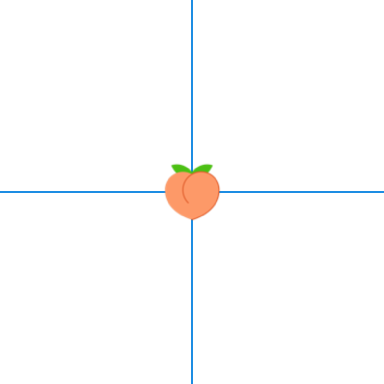

Code
targets::tar_source("../R_functions")targets::tar_source("../R_functions")Background In 2022, the MPOX (previously Monkeypox) virus emerged as a global pathogen largely infecting queer men via social and sexual networks. As a response, we initiated a study to understand the best use of targeted resources to protect individuals across these networks of interaction through social media and vaccination campaigns.
Possible Directions:
Contextualize the MPX outbreaks in the immediate contemporary history of how marginalized populations were disproportionately impacted by COVID-19 and were last to receive some benefit
Contextualize MPX in the more distant history within HIV, comparing the fact that many contemporary communities impacted disproportionately by MPX overlap with those still in the midst of the HIV epidemic despite availability of many disease controlling and treatment interventions (Black/Latine Trans folks with decrease PREP availability etc, caveat with cisgender black women being highest growing demographic of new HIV infections as far as a I know)
Importance of addressing densely networked communities like the queer communities methodologically in epidemiologic studies though it is often unaddressed
The aims of the analysis are to: a) describe participants according to sociodemographic characteristics, connection with queer and transgender communities, and utilization of health care services; b) describe spatial patterns of social and sexual connection across congregate settings in New York City; and c) assess the potential impact of a hypothetical, place-based intervention to halt transmission of a novel infectious disease.
Mpox (also known as monkeypox) is a zoonotic disease caused by the Monkeypox virus.1 The first animal-to-human transmission was described in the 1970s in the Democratic Republic of the Congo.2 Since the initial case in humans, sporadic outbreaks were reported in west and central Africa, typically originating from contact with enzootic reservoirs in rural areas.3 However, scientists had predicted that mpox infections would persist, increasing in magnitude and severity with declining population immunity. In 1997, a shift was noticed in the epidemiologic and clinical profiles of mpox, with increased human-to-human transmission and decreased symptom severity.3,4 Despite these concerns, research into mpox has been neglected and underfunded for decades in regions where it has been endemic.
In July 2003, the first report of mpox outside of Africa occurred in an outbreak of 72 confirmed or suspected cases in the United States.5 Since then, travel-associated cases outside Africa have had limited secondary spread in Europe, North America, and Asia, indicating inefficient human-to-human transmission.6–9 However, the recent outbreak of mpox—consisting of community spread of a new mpox virus lineage, clade 2b—has caused concern worldwide, with the first significant global outbreak occurring in May 2022.1,9 Early cases were almost exclusively among gay, bisexual, and other men who have sex with men, with transmission being associated with sex in congregate settings.1 By the end of May, the outbreak had spread to 50 countries with more than 3000 cases, and by November 2022, it had reached 109 countries with more than 78,000 reported cases.
Epidemiologic evidence in the United States largely reflected the global patterns of mpox transmission. From May to November 2022, 28,072 mpox cases were reported to the Center for Disease Control and Prevention from all 50 states, with 94.8% among cisgender men, 2.6% among cisgender women, 0.7% among transgender women, 0.2% among transgender men, and 0.7% among gender non-binary people.10 Among individuals with information reported on recent sexual or close intimate contact (n = 16,892), 82% reported any sexual or close intimate contact with during the 21 days preceding symptom onset.10 Furthermore, Black and Hispanic or Latina/e/o/x individuals accounted for more than half (52%) of reported mpox cases.11
The United States faced barriers to an effective public health response to the mpox outbreak, particularly in the stockpiling and deployment of vaccines. The safer vaccine, Jynneos, was not mobilized with the intent of halting the outbreak despite early calls from activists. Testing and treatment were also not provided in the early phase of the outbreak. Public health agencies were anticipated to focus on place-based interventions in known public sex venues, but the response was fragmented and did not prioritize communities that were most vulnerable to the outbreak, including Black, Latina/e/o/x, and transgender individuals. Furthermore, recent case reports indicate reinfection of mpox among those previously exposed, suggesting a need for a concerted and coordinated public health effort to mitigate a potential future outbreak.
To inform alternative intervention strategies, and to assess their potential efficiency, we conducted an anonymous, community-led, online survey for sex among queer and transgender residents of New York City (NYC). The MPX NYC survey elicited information on where participants live and where they have had group sex, allowing for the characterization of the spatial distribution of sex, particularly group sex. The efficiency of two approaches to using the data to guide place-based health interventions was compared.
Spatial networks: https://www.sciencedirect.com/science/article/abs/pii/S037015731000308X
Characterizing the spatial network epidemiology of an infectious disease
Infectious disease outbreaks are increasing in frequency with climate change.
It is important to develop methods that aid us to quickly and deeply understand outbreaks of new infectious pathogens to enable informed control interventions.
We present a set of methods for characterizing the structure of the network that connects people through the places they co-attend, and places through the people they co-host.
We do this using a custom-designed online survey tool to elicit and analyze the geographic patterning of locations at which the risk of transmitting a pathogen is heightened
The first application for these methods relates to group sex among sexual and gender minorities in New York City.
Since all sex or contact must happen at a commonly occupied physical location, the movement of individuals across psychical space is a necessary condition for an outbreak of sexually transmitted infection to happen.
Patterns of movement across the city offer unique insights about the spatial epidemiology of any sexually transmitted disease, or any health state that requires spatial proximity to spread.
Patterns of mixing across social categories help us to understand the evolution of the epidemic
Other than violence and social exclusion, the high prevalence and incidence of HIV, STIs and MPOX is often attributed to the density of sexual networks, but networks are not empirically measured.
Studies with measured social networks are mostly egocentric - this does not allow for measurement of network structure, only perceptions of network structure
Studies that consider sociocentric networks are mostly modelled or simulated - network structure is a function of modelling decisions and modelling parameters, rather than a function of observed data.
Group sex is understudied, and is likely an important driver of MPOX
few epidemiologic studies quantify and contextualize group sex
was shown to be an important driver of oubreaks in Europe and in the US following major regional events with group sex and group contact
likely an important driver of extant epidemics of syphillis, HIV, and other sexually transmitted infections among sexual and gender minorities
The MPX NYC survey is a project of the RESPND-MI study.
RESPND-MI is a collective of activists and researchers which formed to respond to the 2022 novel outbreak of MPOX among sexual and gender minority individuals across the world.
We introduce novel methods for collecting and analyzing spatial social network data
the map-input question format we designed, tested and implemented for the MPX NYC study
We introduce a framework and a set of descriptive statistical tools for analyzing map-input question data
The overall study goal is to use patterns of movement and mixing to reason about the likely impact of a place-based intervention on the dynamics of an outbreak of novel infectious disease.
Characterize the venues in which group contact (physical or sexual contact in a setting with more than two people) occurs as well as the geographic patterning of participant residences and contact venues
Characterize patterns of movement between community districts among participants move between residence and contact venues.
Characterize the sexual/physical contact network implied by the geographic patterning of residences and contact venues
Examine the impact of a simplified, spatially-targeted intervention to immunize the population represented by the MPX NYC participants against a novel pathogen.
Social process and relationships to some extent play out in physical space since humans exist and interact in physical space. Network theorists have observed that, for instance, the relation of trust is heavily dependent on the physical context under consideration, along with the social context. For instance, Small, found that women were x more likely to trust strangers to take care of their own children on the premises of a school compared to in public spaces. Another example the idea of propinquity, that spatial nearness between people shapes their likeihood of forming relationships attest to the influence of the spatial on the social.
Physical space, therefore, is an important aspect of any social enquiry. It should be surprising, then, that current models for quantitative causal inference do not consider space as a structure that arrays most causal processes under investigation. On the other hand, the scholarly tradition of causal inference in epidemiology has proven its refusal time and again to develp models that make sense of the social per se, opting rather to concern itself with the causal effects of abstract interventions on the outcomes of contextless humans.
The SSNAC is a byproduct of an enquiry into the interactions of people in the city as a space. It concerns itself with patterns of connection between places as a result of the exchange of people. Obversely, it concerns itself with patterns of interaction between people as a result of the places they coinhabit.
In this study, we enquire about a specific type of social interaction (group sex) in the spatial context it unfolds in. We consider both the proximal spatial context of the hotel room, apartment, or park in which the sex happens as well as the more distal spatial context of the census tract, neighborhoods, district, or borough that is the context of the context.
We were initially interested in understanding how to distribute mpox vaccine to gay men in the most efficient way, given the measured structure of the sexual and social networks we form. We had been struck, in the aftermath of the initial mpox outbreak, at the willingness of informed and uninformed experts to attribute the rapid dissemination of this pathogen in this group to the “structure” of our “sexual network” without studying that structure. Indeed, even if they had consulted the research literature, they would find very few studies that actually measured networks. The vast majority of studies on social networks and health measure what they term egocentric networks. The way those measures are taken, however, almost always guarantees that the actual object under study are the perceptions of study participants of their own social networks.
We aimed to measure these networks directly and indirectly in order to test some of the explanations offered for the rapid dissemination of mpox and to inform responses. In the process of solving some of the practical challenges occasioned by this endeavor, we developed the major components of the Social Spatial Network Analysis with Causal interpretation framework, which we outline here.
In the process of solving some practical study design-related problems, we developed the major components of SSNAC. Before we outline these, let us explain the problems.
The study was designed to minimize the risk posed to participants by the collected data set, once it was available to the public. It is anonymous to ensure that information about participant identities or sexual practices are not linked with any individual. At the same time, we wanted to measure the social and sexual networks of participants through chain referral and we wanted to measure the location of the places participant have sex at.
To conduct chain referral without collecting identfying information (such as phone numbers or email addresses), we designed a system that uses the native messaging apps used on android and apple phones. Towards the end of the survey, participants are prompted to share the survey with friends and sexual partners. If they agree to share the survey, the survey instrument generates a survey url and prompts the user to share it using any of the methods their phone allows. When browsing the url, the receiver would either be prompted to enter a code-name that was assigned to them by the app if they already completed the survey, or would be presented with survey questions if not. The code-name is provided to particiants when they first take the survey . It is provided as an image file with the code-name printed in text and as a QR code. The participant is prompted to save this image file on their phone. Exceedingly few participants used the chain referral, so we did not present any data.
The initial challenge to overcome in measuring the location of places participants had sex in was that, in our view, participants would be unwilling or unable to recall the exact names, addresses, zip codes, or even cross-streets of the places they had met. If we managed to overcome that challenge, the next was to record locations without compromising the anonymity of the participants.
The former challenge was overcome by creating the same experience for the participant as they would have if they were finding a place using the map application on their phone. We used the google maps APIs to display a map in the survey instrument that has a similar interface as the google maps app does (search box; ability to zoom and pan; street, place and landmark names displayed). Through this interface, participants were asked to enter locations by tapping on the map and answering questions related to that particular place.
We had planned to address the latter challenge by tasselating the map and saving only the coordinates of the tile containing each set of spatial coordinates. We ended up sending the spatial coordinates yielded by the google maps interface to a reliable API which converts spatial coordinates to census tract identifiers. Census tracts partition the map of the U.S. into spatial units containing XXX to XXX residents. The study database contains only the census tract identifiers of the places participants reported.
Because we expected to collect network data, they survey instrument’s backend was designed as a neo4j network database whereas most study data are recorded in relational databases. Storing the data in this way was useful because the databse system allows users to query the database through a sequence of network operations. The drawback of using relational databases would have been increased computing time for large datasets as it would be necessary to lookup and join datases repeatedly. The network database platform avoids this by saving all the relationships between entities in the database as a network and quering the network.
Once we had completed preliminary analyses and started working on a comprehensive report, we struggled to maintain consistency across different analyses because of the sheer number of data wrangling operations. We had been attempting to use the dataset by creating many smaller datasets for analysis. Inspired by neo4j, we decided to keep the data as a network and to then analyse it through network operations.
In doing this, we came to appreciate the tidygraph package, which gives users a tidy experience with the core functions of the igraph package. The tidygraph package represents the network as two related tables (tibbles): a table of nodes, which also includes node characteristics, and a table of edges, which also allows for edge characteristics. The SNACC framework owes a debt to the developers of tidygraph - the ability to analyze network data effectively is made possible by the ability to filter nodes and edges for different sets of analyses. But this package was not designed for epidemiologists. We developed some custom functions for common network operations such as grouping nodes into larger nodes, or summarizing the values of all the nodes connected to a given node. The idea of keeping the dataset in what we term the Person-place Graph below, however, comes from the experience of usuing tidygraph to query mpx nyc data efficiently for the different analyses we taksed ourselves with.
Finally, though we used some measures in the analysis which are difficult to statistically model, we wanted to give some indication of the precision of all the measures we report. We used the bootstrap, which assumes that individual participants in the study are independent of each other. Yet, the analysis concerns itself with how the population represented by the participants interact in space, suggesting that inter-dependence among the participants is a better assumption than independence.
We have two empirical reasons for assuming independence: firstly, the low participation rate on the chain referral suggest that participants entered the survey because of advertising and not because of the influence of their social contacts. Secondly, advertising was done accros different channels, but the majority of the participants were recruiterd after two distinct ads flighted on the same day accross New York City. Only 1300 responded, which is a small proportion of the study population. We understand each individual participant to stand in for a subgroup in the population with the same characteristics, who would all live and have group sex in the same spatial units as the participant has selected. We assume that the individual participants who are in our study are sufficiently removed from each others immediate social and sexual networks that their responses are independent of each other.
Having made the assumption that participants are independent, we conducted the bootstrap by repeatedly sampling from the list of participants with replacement. For each sample, a full synthetic Person-place graph was constructed. Each of these were merged into one network object. For a given measure, we constructed confidence intervals by computing the measure separately on each synthetic Person-place graph and taking quantiles.
’’
plot_icon(icon_name = "peach", color = "dark_blue", shape = 3)